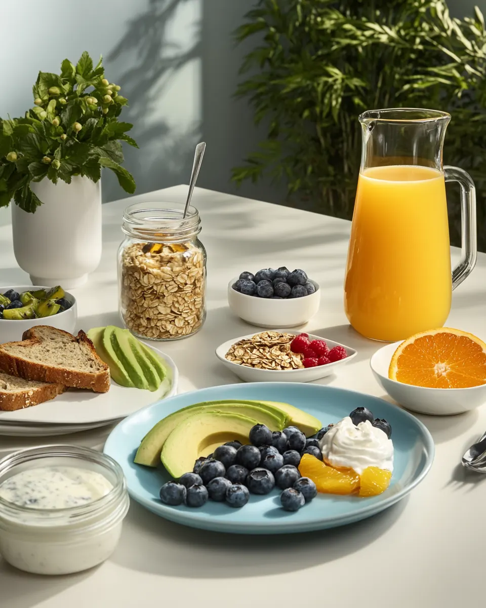

Wiedza i inspiracje
Artykuły o zdrowiu w biurze, owocach, wellbeingu i kulturze zdrowego jedzenia w firmie.
Artykuły o zdrowiu w biurze, owocach, wellbeingu i kulturze zdrowego jedzenia w firmie.
.webp)
Na temat dostaw owoców do biur powstały setki memów, a tysiące artykułów o benefitach powtarza tezę, że owocowe czwartki już się skończyły. Jak to się ma do rzeczywistości?
Czytaj dalej →.webp)
Współczesne organizacje coraz częściej zwracają uwagę na aspekty z różnych obszarów ESG. Realizacja założeń tej polityki nie tylko poprawia wizerunek firmy, ale także wpływa na jej długoterminowy rozwój.
Czytaj dalej →
Ile jeść owoców dziennie? Jak często można po nie sięgać i o jakiej porze dnia? Sprawdź rekomendacje WHO i polskich dietetyków.
Czytaj dalej →
Czy owoce zawierają witaminę D? Sprawdź, jakie witaminy znajdziesz w owocach i skąd czerpać witaminę D w diecie.
Czytaj dalej →
Dieta przy niskim i wysokim ciśnieniu – które produkty jeść, a których unikać? Lista owoców i warzyw wspierających zdrowe ciśnienie.
Czytaj dalej →.webp)
Kolagen w owocach i warzywach – które produkty wspierają produkcję kolagenu? Lista owoców bogatych w witaminę C.
Czytaj dalej →
Wspólne jedzenie buduje relacje i ułatwia współpracę. Jak zorganizować integracyjne śniadanie dla zespołu?
Czytaj dalej →
Lemoniady, owoce sezonowe, akcje sokowe – pomysły na letnie benefity, które poprawią atmosferę w zespole.
Czytaj dalej →
43% pracowników je w pracy gorzej niż w domu. Dane, wnioski i rekomendacje dla pracodawców.
Czytaj dalej →
Orzechy wspierają pamięć i koncentrację. Idealna przekąska biurowa – wartości odżywcze i optymalna porcja.
Czytaj dalej →
Nawet 1-2% odwodnienie obniża koncentrację o 20-30%. Praktyczne wskazówki na nawodnienie w biurze.
Czytaj dalej →
69% pracowników zostaje dłużej w firmie z dobrym onboardingiem. Co powinien zawierać pakiet powitalny?
Czytaj dalej →
Top 10 zdrowych przekąsek biurowych, które utrzymują energię i koncentrację przez cały dzień.
Czytaj dalej →
78% pracowników uważa benefity żywieniowe za ważne przy wyborze pracodawcy. Jak to wykorzystać?
Czytaj dalej →
Praca zdalna sprzyja podjadaniu. 3 pułapki żywieniowe home office i jak ich uniknąć.
Czytaj dalej →
Menu konferencyjne, przerwy kawowe, lunch – jak zaplanować catering, który utrzyma energię uczestników?
Czytaj dalej →
Kompleksowy przewodnik po wyborze dostawcy owoców do biura. Jak zapewnić świeżość, optymalne ceny i zadowolenie pracowników.
Czytaj dalej →
Jak zaplanować dostawę kanapek dla zespołu? Przewodnik po typach, ilościach, przechowywaniu i kombinowaniu z owocami.
Czytaj dalej →
Ranking najważniejszych benefitów dla pracowników. 82% pracowników wskazuje dostęp do zdrowszych posiłków jako kluczowy benefit.
Czytaj dalej →
Jak wdrożyć program wellness w firmie? Praktyczne kroki: audyt, cele, trzystopniowy model, pomiary. Case study z wynikami.
Czytaj dalej →